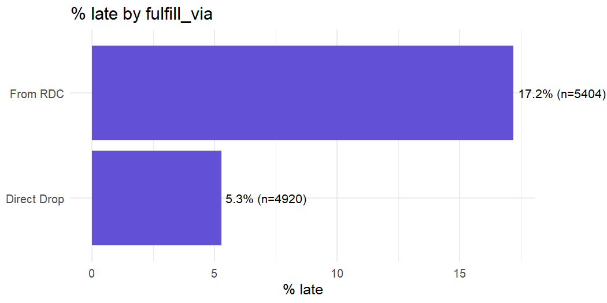

Public-data portfolio project · R · SQL · Power BI · Python
USAID supply-chain delivery performance
Using 10,324 shipment records across 43 countries to identify delivery risks and prioritise operational investigation.
Interactive evidence view
Where are delivery delays concentrated?
Source: USAID Supply Chain Shipment Pricing Data · observed records
Late rate by fulfilment route
Late rate by shipment mode
Highest-risk countries in the selected view
| Country | Shipments | Late rate | Average delay |
|---|
Late means the recorded delivery date is after the scheduled delivery date. Group differences are associations, not proof of causation.
Predictive evidence
Model check
Reported from the project’s Python analysis
Use with care: this model supports prioritisation and proactive review, not operational deployment. The reported result comes from one held-out split; validate on later shipments, check calibration and class imbalance, and assess leakage before using predictions in production decisions.
Problem
Late health-commodity shipments can disrupt supply planning. Which delivery patterns warrant closer investigation, and how can analysis support more reliable fulfilment?
Analysis
The project combines data preparation, SQL analysis, statistical testing, dashboard reporting and predictive modelling. Delivery performance is compared across fulfilment routes to help focus an operational review.
Insight

These are observed group differences. Shipment mix, destination, customs and other factors may contribute; the comparison alone cannot establish causation.
Recommendation
Prioritise a review of the highest-risk route and countries. Examine customs and handoff delays, compare like-for-like shipments, and identify where delivery exceptions accumulate before proposing changes to routing.
Business value
The analysis helps an operations team focus its investigation and decide which delivery measures to monitor. Recommendations are analytical proposals; no implemented savings or delivery improvements are claimed.